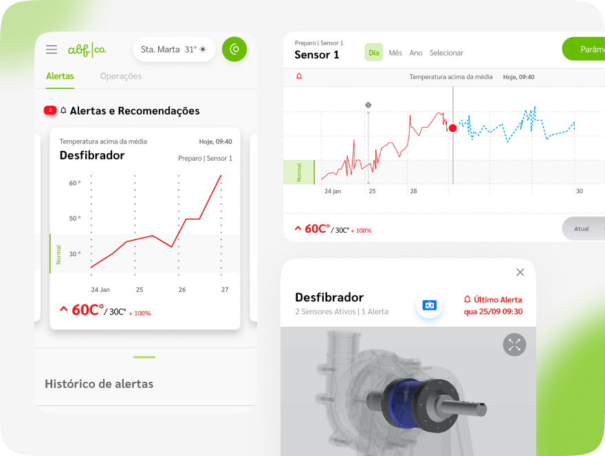
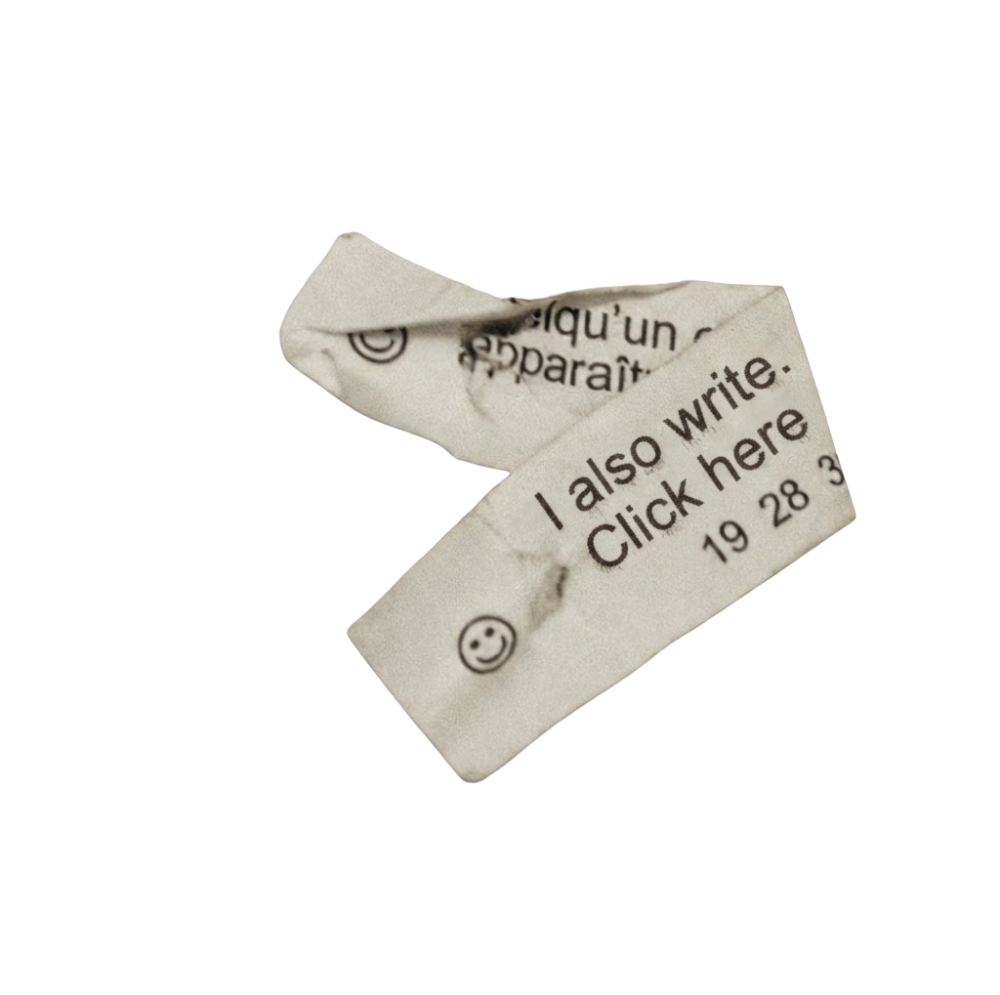

ABF
AgribusinessMachine Maintenance


"Simple rules can generate complex behavior."
I am a designer working at the intersection of experience, strategy, and technology. Over the past 10 years, I've helped some of the world's largest enterprises navigate complexity through innovation — designing AI-driven solutions and business strategies built on SAP technologies and artificial intelligence.
I specialize in Service Design, User Experience (UX) Design, and innovation methodologies, combining a strong visual design background with strategic thinking to deliver aesthetically compelling, business-relevant outcomes. I also have deep experience building compelling business cases and supporting technical and business architecture for enterprise AI initiatives.
Anhembi Morumbi, Graphic Design Bachelor's Degree
IU Internationale Hochschule, B.A. Entrepreneurship
English Fluent Level; Portuguese Native Speaker; Spanish Professional Level;
Service Design, Innovation Strategy, Design Thinking, AI Strategy & Value Realization, User Experience (UX), Business Development, Project Management
SAP LAC Innovation Tournament, 2024, 2025 — Mentored participating teams across the Americas on AI strategy and solution design, in SAP's regional "Reverse Shark Tank"-style innovation competition
Mastering the AI Discovery Workshop: Tips & Best Practices, 2026 — Created and led a self-paced learning program for SAP professionals across the Americas on structuring AI Discovery Workshops, translating SAP Business AI capabilities into value-driven adoption roadmaps
Brazilian-German Chamber of Commerce and Industry — Innovation & International Cooperation Event — Represented SAP.iO in a German Accelerator initiative, holding 1:1 sessions with international startups to discuss business opportunities and their application in the Latin American market
ADG Brasil — 12th Brazilian Graphic Design Biennial, 2017 — "U+2194: A Typographic Experience" — Led an experimental, interactive digital typeface exploring type and technology
SAP Labs Innoweeks, 2020 — 1st Place, Best Design — with Wickbold
SAP Innoweeks, 2017 — 2nd Best Innovation Use Case — with O Boticário
SAP Spotlight & Honor Recognitions, 2017–2018 — Internal recognition for outstanding contribution
Itaú BBA — Redesigned treasury reconciliation for new fintech rails (PIX, Open Banking) — Up to 50% less reconciliation time, lower cost, higher digital adoption
Bradesco — Designed an "invisible banking" experience integrating ERP and bank data for SMEs — Improved digital engagement and transaction volume
Grupo Pão de Açúcar — Designed Brazil's first walletless checkout for express stores — 75% shorter checkout time, 60% lower POS cost
Wickbold — Designed a tracking system for reusable distribution crates, SAP Innoweeks 2020 — 1st Place, Best Design (SAP Labs Innoweeks, LatAm)
Embraer — Defined an AI strategy spanning governance, agent design, and integration — Delivered to C-level innovation committee, supporting AI adoption
Boomera — Designed a marketplace connecting waste generators with recyclers and cooperatives — Public partnership (SAP NOW 2020); served brands like Adidas, Unilever, GPA
Evergreen — Reframed life insurance as a living, revisable legacy plan, redesigning product, positioning, and operating model — Projected: addresses a retention gap worth up to 10x revenue on managed clients
ABF — Led plant immersion and UX research, then designed a predictive maintenance app translating scattered sensor data into real-time equipment health and failure alerts — Published case study; shifted maintenance from corrective to predictive
XMining — Designed an AI-assisted system that analyzes, prioritizes, and recommends solutions for maintenance requisitions — Published case study; reduced backlog risk and mitigated emergency purchases
| Client | Sector | What I Did |
|---|---|---|
| Usina São Martinho | Agribusiness | Real-time ops center for harvest & logistics decisions |
| Natura | Consumer Goods | Real-time matching model for consultant-to-client delivery |
| Neoenergia (Celpe) | Utilities | Automated document verification for ownership-change requests |
| CBA | Mining | Digital daily-routine tool with customer-facing KPIs |
| Petrobras | Facilities Maintenance | Chatbot-driven maintenance intake with automatic ticket triage |
| BASF | Chemicals | Data-driven lead scoring for sales coverage |
| BR Distribuidora / Petrobras | Retail | Loyalty-linked personalization for gas station experience |
| BRF | Food | Optimization model for daily truck allocation |
| Porto Seguro | Insurance | Low-cost digital compliance model for SME segment |